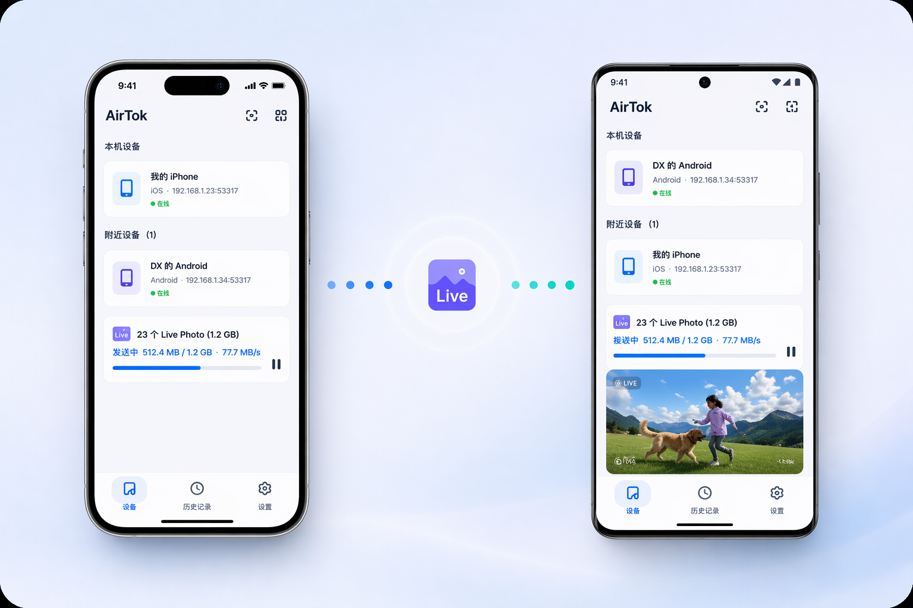

选择你的设备
没有任何依赖，30 秒即可装好
macOS
Universal · macOS 11+
下载 .dmg →iOS
iOS 15+ · iPhone & iPad
即将上架 App StoreAndroid
arm64 · Android 7+
下载 .apk →所有版本
查看历史版本与更新日志
查看更新日志 →AirTok 是一款跨平台局域网文件传输工具，支持 iOS、Android、macOS、Windows、Linux 五大系统。它能在 iPhone、安卓手机、Mac、Windows PC 和 Linux 电脑之间直接互传照片、视频、文件和文本，无需登录账户，不经过云端服务器。AirTok 支持 iOS Live Photo 与安卓动态照片的底层自动适配、断点续传、几十 GB 超大文件稳定传输、应用内解压压缩包、文件夹整目录发送、一次发送给多台设备、TLS 1.3 端到端加密等能力，是 AirDrop 和 LocalSend 的开源替代品。
Windows、Mac、Linux、iOS、Android 多端联通。iOS Live Photo 与多品牌安卓动态照片底层自动转换。支持文件夹直接传输，几十 GB 超大文件稳定传输。
五端同步，随时可用。
AirTok 支持 Live Photo 与安卓动态照片自动适配，跨设备传输后，可直接在 app 内查看动态图，保存到相册后也会被系统识别为动态图。

同类产品对比
| 能力 | AirDrop | LocalSend | AirTok |
|---|---|---|---|
| 五端全覆盖（Win/Mac/Linux/iOS/Android） | 仅 Apple | ✓ | ✓ |
| Live Photo 跨平台保留（含安卓动态照片） | 仅 Apple↔Apple | ✗ | ✓ |
| 断点续传 / 暂停恢复 | ✗ | ✗ | ✓ |
| 超大文件稳定传输（几十 GB） | 易中断 | 易中断 | ✓ |
| 扫码快速配对 | ✗ | ✗ | ✓ |
| 多设备并行发送（一次发给多台） | ✗ | ✓ | ✓ |
| 信任设备免二次确认 | ✗ | 部分 | ✓ |
| 文本 / 剪贴板直传 | 简陋 | 走文件通道 | 一等消息 |
| 文件冲突策略可选 | 固定 | 仅重命名 | 重命名/覆盖/跳过 |
| 应用内解压 | ✗ | ✗ | ✓ |
| 网络诊断可视化 | ✗ | ✗ | ✓ |
| 无需账户 | Apple ID | ✓ | ✓ |
| 端到端 TLS 加密 | ✓ | ✓ | ✓ |
专注把传输这件事做到最好：跨系统、不压缩、不丢动态
断网重连，从刚才的地方接着传。几十 GB 也能稳稳落地。
数据只在你的两台设备间流动，不经过任何服务器。
不绕道云端。路由有多快，传得就有多快。
收到 ZIP、RAR 等压缩包，点一下直接在应用内解开。
发个长链接或验证码，比文件传输助手好用百倍。
同一个 Wi-Fi 下开机即连。附近设备自动出现在列表，点一下就发。
手机扫一下屏幕上的二维码，设备立刻配对。不用拼设备名、不用等发现。
一次选中多台设备，同一批文件并行发给所有人。课堂派资料、团队同步讲义再也不用重复点。
即开即用。无需注册，更不用登录。
发过什么、发给谁了，笔笔清晰，可随时找回。
出门前暂停，到家再继续。不必担心中断打断节奏。
同名文件遇上了？重命名、覆盖、跳过自己选，不再被默认规则绑架。
哪张网卡在发包、谁没收到，一目了然。发现不了设备时不再瞎猜。
没有任何依赖，30 秒即可装好
Universal · macOS 11+
下载 .dmg →iOS 15+ · iPhone & iPad
即将上架 App Storearm64 · Android 7+
下载 .apk →查看历史版本与更新日志
查看更新日志 →完全不需要。AirTok 只用局域网，和有没有外网无关。两台设备连在同一个 Wi-Fi、同一个路由器、或者其中一台开热点另一台连上去都能传——哪怕手机完全没有蜂窝信号，开个热点照样互发文件。
AirDrop 只在苹果设备之间用，Windows 和安卓被排除在外。LocalSend 虽然跨平台，但不支持 Live Photo 跨平台保留，也没有真正的断点续传。AirTok 把这些都补上了。
所有传输走 TLS 加密。每次接收前对方设备会弹窗确认，不存在静默拉取的可能。
没有大小限制。几十 GB 的视频实测可以稳定传完，断点续传机制让中途失败也不怕。
在访达里右键 AirTok → 打开，弹窗里再点一次「打开」即可。后续版本会做 Apple 公证，就不会再有这个提示了。